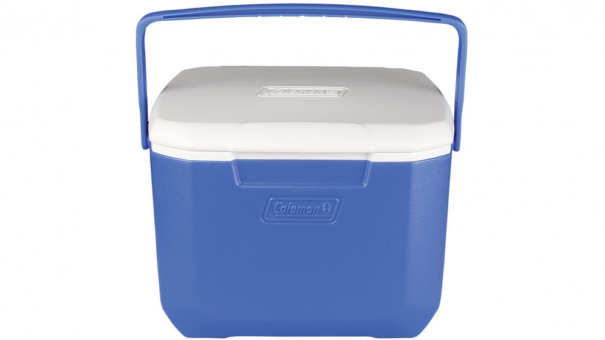
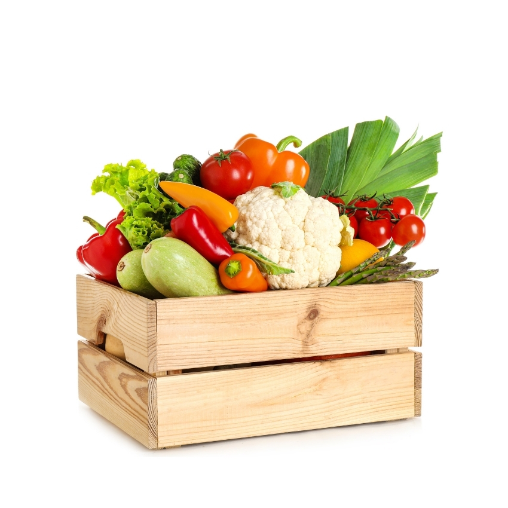

As you scavenge through the boxes you find tools, bales of hay, barrels,
and boxes as what turn out to be diffrent fruits and vegetables,
even some petrol and most unexpectedly a water pump, even a esky with meat!
Do you choose to:
Eat the fruits and vegetables
or
Have a barbeque with the meat

